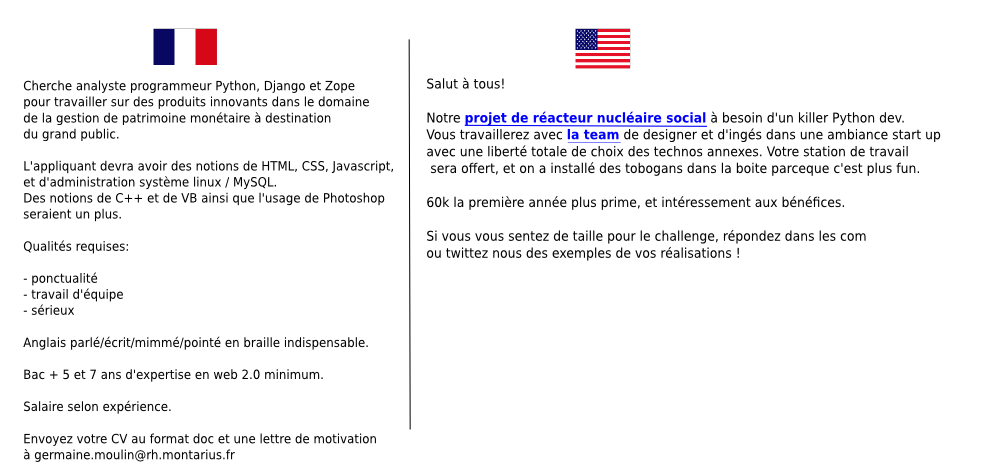

Voici la raison pour laquelle la plupart des bons programmeurs que je connais ne travaillent plus qu’avec des américains depuis quelques années :

Annonce française VS annonce américaine
(surtout que ça devient facile de trouver un job de dev)
Plus sérieusement, si par hasard un recruteur s’est perdu sur le net et lit cet article, voici quelques pros tips :
- Un bon programmeur, ça se paie. Pour 1500 euros vous n’aurez pas le top du top. Même pas le top du pas top. Vous croyez vraiment que vous pouvez demander à un mec de maîtriser 20 technos, 2 langues vivantes et espérer qu’il prenne un SMIC et demi ?
- Plus que dans n’importe quel domaine, le CV, la lettre de motivation et les études sont les pires indicateurs. Le seul valable c’est l’entretien technique, précédé par une démo des réalisations précédentes ou d’un questionnaire technique pour le filtrage si les débutants sont acceptés. Je croule sous les exemples d’embauche d’incompétents recrutés au CV. Le dev qui a la plus grande compétence technique que je connaisse a BAC -4 et ses talents sociaux limités ne le font pas briller à un entretien. Son salaire actuel est de 13000 euros par mois.
- Si vous cherchez plus qu’un mec qui reste assis dans son bureau à mater un écran, il va falloir lui vendre votre boite. Parlez-lui des avantages, des projets, si vous en avez. Bref, arrêtez de vous prendre pour le propriétaire terrien qui vient chercher en camion sa main d’oeuvre mexicaine.

{kind=link}
http://programming-motherfucker.com/
Posté un jour par Sebsauvage, d’ailleurs ;-)
Il faudrait faire la même chose avec ‘like a boss’ ;-) Il me semble que par ailleurs que http://programming-motherfucker.com/ avait surtout buzzé grace à coding horror non ?
La plupart des offres d’emploi en France sont totalement à côté de la plaque, c’est d’ailleurs pour ça que j’ai laissé tomber le salariat très longtemps (et je continue pour le moment).
J’avais réalisé un article sur le sujet il y a peu, j’espère que tu l’appréciera autant que j’ai apprécié le tien :D
http://identitools.fr/actu/offre-emploi-integrateur-web
Vous allez rire mais je crois que je me suis inspiré de votre article le jour où j’ai écris celui-là. J’avais du le lire un peu avant, et ça ma tilté.
Encore ces satanés pirato-pédo-nazi qui copient tout sur internet !
Je laisse ça ici :
http://is.gd/uw4G9U
En terme de vulgarité personne ne pourra égaler dora la junky et son double sextoy:
http://is.gd/7wtlgc
Bon, on a fait le pédo, le pirato. Quelqu’un nous sort un énième détournement de “la chute” pour couvrir le côté nazi ?
Juste pour tester la fonctionnalité de commentaires imbriqués : “un mot par ligne” ^^
Même dans des postes à la portée de tous, il faut avoir de l’expérience et des diplômes. Pour ma part, je galère vraiment pour trouver du boulot pour le moment même pour faire simplement caissier …
J’ai une amie en école d’avocat qui bosse l’été comme caissière pour se payer ses études. Elle a travaillé plusieurs fois pour le même supermarché.
Malgré son bac +5 et son expérience en tant que… caissière… chez EUX, ils lui on refait faire un entretien d’embauche l’année dernière avant de la réembaucher.
On sait jamais, des fois qu’elle soit devenue analphabète entre temps. Ah non, ça, ça n’aurait aucune importance.
J’ai un pote qui a quitté la France pour ça, il est à Singapour maintenant, le salaire frôle les 10 000 eur pour un poste similaire contre 3 / 4 Keur à Paris. Il cherchait un nouveau job mais on lui demandait n’importe quoi un peu comme sur l’exemple, d’ailleurs il vient à Phuket ce soir pour qu’on se fasse une viré, pas mécontent d’avoir quitté ce pays ^^
Et bon courage à ceux qui cherchent du taf en France.
Sauf qu’en France pour payer un type 4kE/mois, elle doit en débourser 8kE/mois. La différence part en impôts et cotisations. À Singapour, il n’y a rien de tout ça donc la différence entre ce que ces 2 entreprise (Françaises et Singapouriennes) déboursent n’est pas si grand, au final.
Tout à fait. Et en France on a la sécu et la retraite pour le salarié. Mais a singapour, le cout de la vie est moindre qu’en France, et on paie moins d’impot, ce qui fait que la différence de niveau de vie est énorme.
Soyons juste cependant avec les entreprises françaises, c’est tellement dur pour eux de virer un incompétent au final qu’ils marchent sur des oeufs au recrutement. Ca ne les aide pas, mais je comprends la trouille. Quand tu as de grande chance de te retrouver avec un abruti qui te coûte salaire X 2 aux commandes de tes infrastructures et que pour le virer il faut limite qu’il tue quelqu’un, ça calme.
Il faut ajouter tout de même que la sécu est souvent comprise dans le package de l’entreprise, quand elle ne l’est pas dans les impôts.
Il y a bien des soucis dans l’autre sens. Le soucis est culturel, la France est inadaptée à l’ère informationnelle et ne veut pas s’y adapter.
Je ne sais pas si tu connais mais y’a ça dans le même genre http://www.hteumeuleu.fr/recruter-un-integrateur-petite-annonce/
Z’ont de l’humour au moins ^^
ça me donne une idée tout ça d’ailleurs.
imaginons un site sur lequel je rentre mon domaine de prédilection, au hasard developpeur python.
Ensuite je dois donner mes gravatars/ pseudos de post (sur stackoverflow, le web en général, aufeminin, que sais-je).
Le site pourrait par la suite scanner les forums et autres endroits où j’officie et ainsi en sortir une note appréciative. par exemple les badges et points Stackoverflow, les likes sur mes commentaires si il y en a, etc…
ça pourrait être un bon indicateur je pense…
@Max: Classe ça dans “plan qui ne peut absolument pas rater n 7897980”
Tiens d’ailleurs y a une étude sérieuse sur la question de l’incompétence au recrutement dans le secteur de l’informatique :
http://www.silicon.fr/munci-penurie-main-oeuvre-informatique-leurre-74493.html
Ah, on s’est encore fait linker par sebsauvage. C’est facile a voir, y a comme un gros pic dans les stats…
Héhé !!! :-)
Et encore, vous n’avez pas été linké par Korben : en general le site sature et fini par s’écrouler.
Mais on travaille sur la question: on va faire un post sur l’importance de la neutralité des réseaux P2P anonymes anticapitalistes dans la lutte contre la collecte des données utilisateurs.
Ca devrait attirer son attention :-)
Arf, je viens de tomber sur un exemple réel parfait:
http://www.afpy.org/Members/SMILE2/SMILE2
Nous: on est les meilleurs, on gagne un max de pognon et on travaille sur des projets “à forte valeur ajoutée” (même si personne n’a la moindre d’idée de ce que ça veut dire)
Vous: bac +5, informatiquement polyglotte, vous allez travailler pour nous en échange de “perspectives vers des postes de gestion de projet” (sous condition de “succès”). Pour le salaire et la passion, on verra plus tard.
Je devrais faire un bot qui détecte les annonces à la con et poste automatiquement cet article à leur RH.
Excellent article, pour ma part j’ai fais un captcha pour filtrer les recruteurs qui tapent “Ingénieur Java J2EE” dans Viadeo / LinkedIn… Afin de valider qu’ils ont au moins fait l’effort de venir sur mon site.
Le pire dans cette histoire de travail en France, c’est que personne ne forme officiellement les gens à devenir patron, ni ne leur dit qu’il y a des banques dites d’investissements comme Oséo et des organismes de Crownfunding (crédit solidaire en gros). Pire, dans les livres d’économie, il n’y a qu’une vingtaine de pages qui parle de l’entreprise et encore, pas en bien. Il est clairement dit dans les ouvrages exclusivement écrit par des professeurs que les patrons ne pensent qu’à exploiter la masse salariale et faire du chiffre et ce, quelque soit les conditions de sécurité. ET LES ACCIDENTS DU TRAVAIL, C’EST GRATUIT PEUT-ÊTRE ? BORDEL, C’EST AU MOINS 2000 EUROS FACILE AVEC TOUTE LA PAPERASSE. Et nos chers syndicats et conseils de prud’hommes ? Ils n’arrangent rien à l’affaire. Au pire, il ne se passe rien, au mieux ( si l’on peut dire ), c’est le salarié fautif qui y gagne, même au risque de couler l’employeur ( voyez plutôt ce billet d’Éric Rocheblave qui est avocat spécialisé droit social, droit du travail et inscrit au barreau de Montpellier http://www.rocheblave.com/avocat-montpellier/la-souffrance-des-patrons-au-travail/ ). Après avoir pris connaissance de cela, je pense que faire une société en France, sur beaucoup de points, on n’a pas trouvé pire pour trouver pire. Sincèrement, j’aime mon pays mais ce visage qu’arbore le monde du travail et de l’entreprise en France me fait horriblement honte et je pèse mes mots.
Un accident du travail, c’est beaucoup plus cher que ça. La situation du travail en France, c’est perdant / perdant:
– perdant pour les employés mal payés, mal considérés, et qui s’ennuient à mourir tout en étant mal traité;
– perdant pour les patrons qui paie une fortune des travailleurs qu’ils ne peuvent pas virer si ce sont des incompétents.
J’ai particulièrement aimé les différents articles linkés ici (et celui-ci aussi d’ailleurs), c’est tellement flagrant, faut avoir pire qu’une poutre dans l’oeil pour pas s’en rendre compte…
Ça me donne tellement envie de spammer les gens qui postent ce genre d’annonce avec des faux CV (en mode “Kékévin14ans1/2” comme en mode “Supéréros”) histoire de les forcer à réagir…
Quand tout ces RH et autres recruteurs comprendront-ils comment on fait pour recruter quelqu’un, hein ?…
Si par hasard un développeur s’est perdu sur le net et lit cet article, voici quelques pros tips:
– Les annonces US sont aussi mauvaises que les françaises, mais il y a des exceptions partout, témoin la 1ère annonce java sur craiglist NY à l’heure où j’écris -> http://newyork.craigslist.org/lgi/sof/3034215214.html
– Tu développes depuis 2 ans en php et tu postules pour un job de dev java senior et tu te demandes pourquoi tu n’es pas pris? Non, sérieux, on est parfois désespéré mais pas à ce point.
– Tu es dev java et ton principal challenge a été de développer l’appli qui gère les stocks de la boucherie Sansos, tu réponds a une annonce de dev java qui demande des connaissances Scrum, Waterfall, des trucs que tu ne maîtrises que sur ton CV. Le fait d’être dans une profession qui ne connaît pas le chômage ne te dispense pas de faire une lettre de motivation pour expliquer en quoi tu corresponds à ce que cherche l’entreprise.
– Tu as un problème parce que comme 80% des dev tu t’estimes pas assez payé, tu as un pote (plus compétent mais toi tu ne vois qu’une chose, un codeur est un codeur) qui gagne 30% de plus que toi. Vas voir ton boss et discutes en, évites de faire perdre leur temps aux recruteurs et a tes paires en répondant à une annonce et en allant jusqu’au bout du processus de recrutement uniquement pour avoir une offre et pouvoir la coller sous le nez de ton patron pour discuter augmentation. Tu as une paire de couilles, utilises la.
– Le fait d’avoir un diplôme de la mort et 5 propositions de job ne t’interdit pas d’être à l’heure en interview, de sourire, de faire au moins semblant de t’intéresser sans regarder ta montre toutes les 3 minutes, la politesse ça s’apprend même si ça se code pas.
– Arrêtes de croire que le boulot d’un recruteur est de juger tes skills techniques, les skills tu les as, au moins sur le papier, son job ça va être de s’assurer 1) que ta “geekitude” ne te fera pas passer pour un vilain sociopathe devant ses clients 2) que tu sais correctement te comporter dans une entreprise et que tu vas être capable de t’intégrer dans la super équipe que le dev manager a patiemment mis en place, et ça, c’est malheureusement pas quantifiable en 0 et en 1. Chacun son job, un techos te testera a un moment ou a un autre.
– Pendant que tu y es, tu arrêteras de croire que les annonces sont rédigés par les RH et tu comprendras enfin qu’elles sont la plupart du temps rédigées par ton futur, ou pas, dev manager. Au mieux, il y a un recruteur compétent derrière pour dire “Paulo tu déconnes, t’as vu ton budget, comment veux tu que je te trouves ça avec ce que tu paies”, “pas grave, on essaie et on voit”. Ah oui parce qu’au passage tu comprendras que le budget c’est pas le RH qui le fixe, c’est le dev manager. Peut-être que si tu intègres ça, il y a des chances que tu ne reproduises pas le même schéma quand tu seras toi même à poste où tu auras besoin de recruter.
Paille, poutre, tout ça, tout ça. Nous faudrait une bonne guerre ma brave dame comme dit ma voisine de 88ans.
Excellente réponse. Nous sommes aussi entrepreneurs et personnellement je comprends très bien les difficultés de recrutement. Bien sûr le problème va dans les deux sens.
Il y a tellement de dev à deux balles qui vous font perdre du temps. Sans compter ceux qui se font embaucher et avec lesquels on est coincé.
La différence majeur étant que le dev on moins à gagner en changeant leur comportement que les recruteurs: un pignouf reste un pignouf, alors qu’une boite peut espérer recruter mieux. Avoir un bon dev payé plus cher fait économiser beaucoup d’argent.
Par contre:
“Arrêtes de croire que le boulot d’un recruteur est de juger tes skills techniques, les skills tu les as”
Est une erreur monumentale. Pour l’avoir vu mainte et mainte fois, ne pas (ou mal) vérifier les skills technique mènent presque toujours à la catastrophe. Si votre processus de recrutement n’est pas capable d’assurer cette étape de manière efficace, vous êtes niqués.
Dans la continuité de l’attractivité d’une entreprise:
http://sef.kloninger.com/2012/05/engineering-culture-litmus-tests/
“Pourquoi j’ai quitté ma boîte ? Parceque les autres avaient des écrans plus gros.”
Dans la continuité france/usa:
http://julien.dollon.net/post/Alors-finalement-ce28099est-quoi-la-difference-entre-un-developpeur-en-France-ou-aux-USAs-.aspx
Bon, après il ne faut pas oublier qu’un pays, c’est plus que ce qu’il décrit. Le consummérisme à outrace, la patriotisme caricaturale, le port d’arme, la peine de mort, etc. Ca se prend en compte aussi.
Je viens de découvrir par hasard votre blog, et ça va paraître bateau mais j’adore ce que vous faites : parler de Python (et de cul) sur blog francophone… c’est beau.
J’arrive après la guerre, mais le sujet était déjà d’actualité quand j’ai quitte la mère patrie, et je constate que non rien n’a changé. Je voulais juste signaler qu’il existe aussi une alternative entre la France et les US, et c’est le Canada, les salaire y sont un peu moins élevés que chez les voisins du sud, mais il y a la secu, moins d’armes, et les gens sont sympas (on a même 3 semaines de vacances dans les bonnes boites).
Les professions techniques ne sont pas dévalorisées par rapport à celles du management, ce qui fait qu’il est agréable d’y travailler pour un codeur (en plus quand le boulot est fini on peut partir à 17h sans se voir demander si on a posé un RTT, ce qui m’est arrivé de façon véridique à Paris).
Voila ma pierre à l’édifice, même sans vouloir encourager nos jeunes développeurs à devenir de mauvais patriote, je recommande chaudement une expérience professionnelle a l’étranger de manière générale, ne serait ce que pour réaliser les forces et faiblesses de notre beau pays.
merci VonTenia, bateau ou pas c’est le genre de com qu’on ne se lasse jamais de lire.
Je rajoute une pierre à l’édifice, j’ai bien souvent remarqué que les recruteurs cherchent le mouton à cinq pattes, au prix d’un big mac.
Et il ne faut pas oublier qu’il y a des périodes d’essais, renouvelable.
Si tu es pas foutu de te rendre compte que ton nouvel employé est une tanche pendant la période d’essai c’est que toi aussi tu n’aurais jamais du passer la période d’essai.
Les tanches avec les tanches, CQFD.